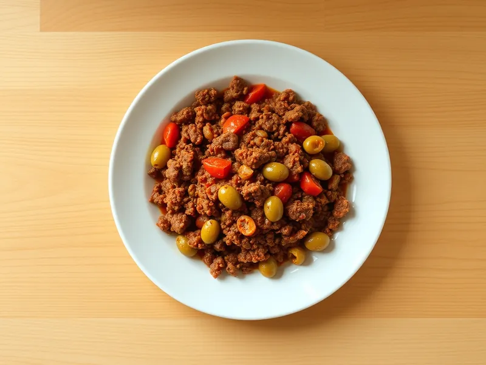

Фото: Иллюстрация ИИ, Cloudflare Workers AI
Пикадильо
Мексиканский говяжий фарш с томатами, перцем, оливками и изюмом
30 мин4 порц.407 ккал на порциюБ 24 · Ж 30 · У 9Американская кухня
Открыть в приложении: порции, таймеры, список покупок
Продукты на 4 порц.
- Говяжий фарш500 г
- Лук репчатый1 шт
- Перец болгарский1 шт
- Чеснок2 зуб.
- Томаты в собственном соку1 шт
- Зира1 ч. л.
- Соль1 ч. л.
- Растительное масло1 ст. л.
- Оливки / маслины по желаниюпо вкусу
- Изюм по желаниюпо вкусу
Как готовить
- Нарежьте лук и перец мелким кубиком, чеснок порубите, 5 минут.
- Обжарьте лук и перец на масле на среднем огне 5 минут до мягкости.
- Добавьте чеснок и фарш, жарьте 7 минут, разбивая лопаткой, пока фарш не станет коричневым.
- Добавьте томаты, размяв их, зиру и соль. Тушите на слабом огне 10 минут.
- Вмешайте нарезанные оливки и изюм, прогрейте 2 минуты. Жидкость должна почти выпариться, а фарш стать густым.
Совет. Изюм и оливки дают тот самый кисло-сладкий вкус, но и без них блюдо получится. Пикадильо подают с рисом или кладут в тако.